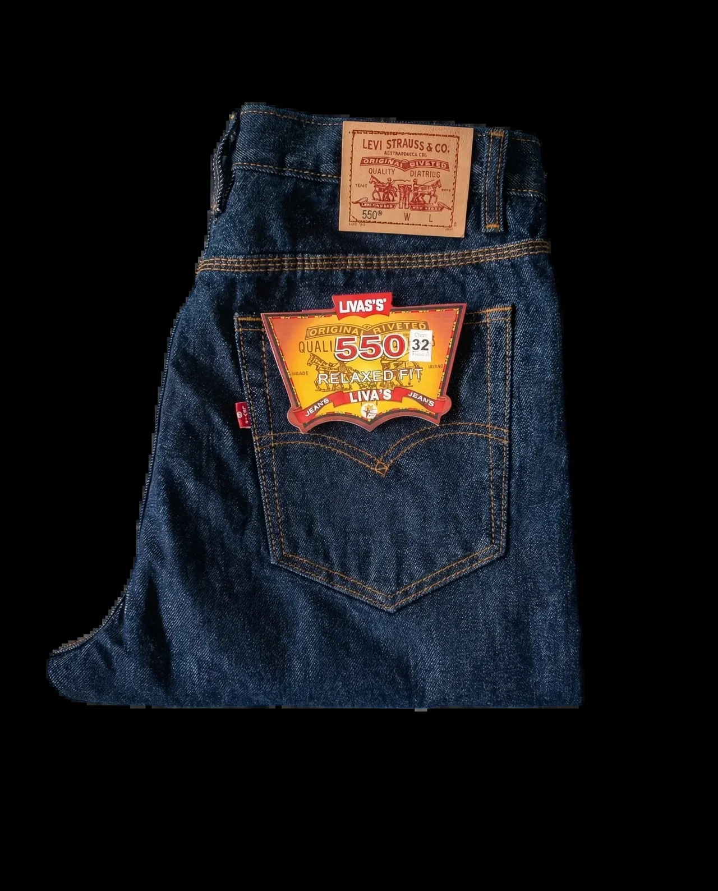
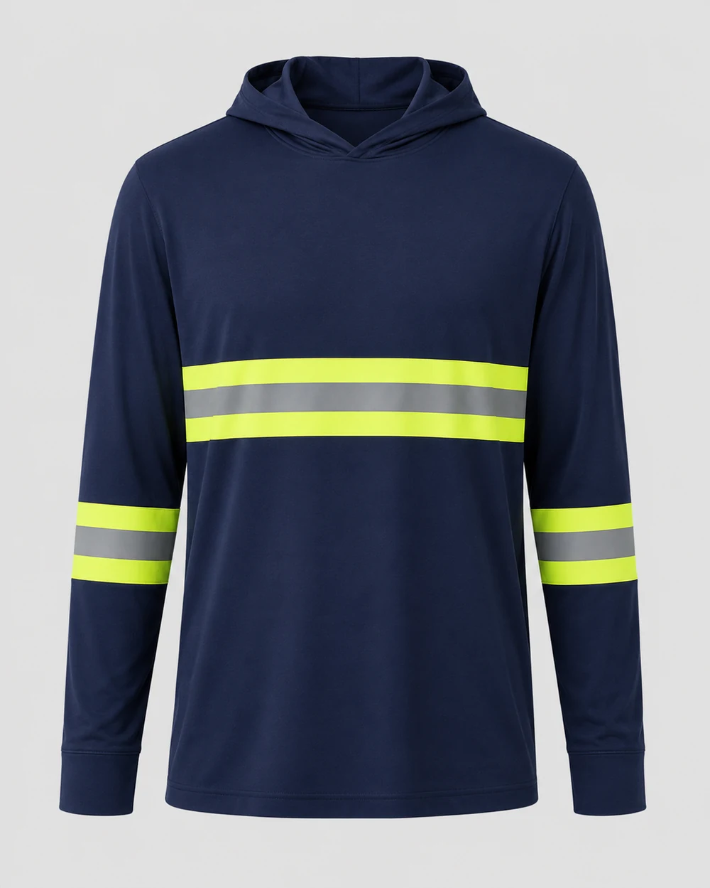
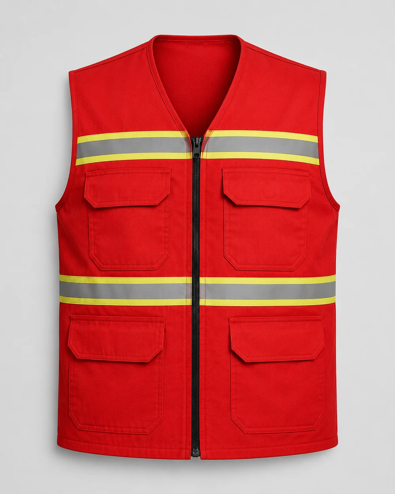
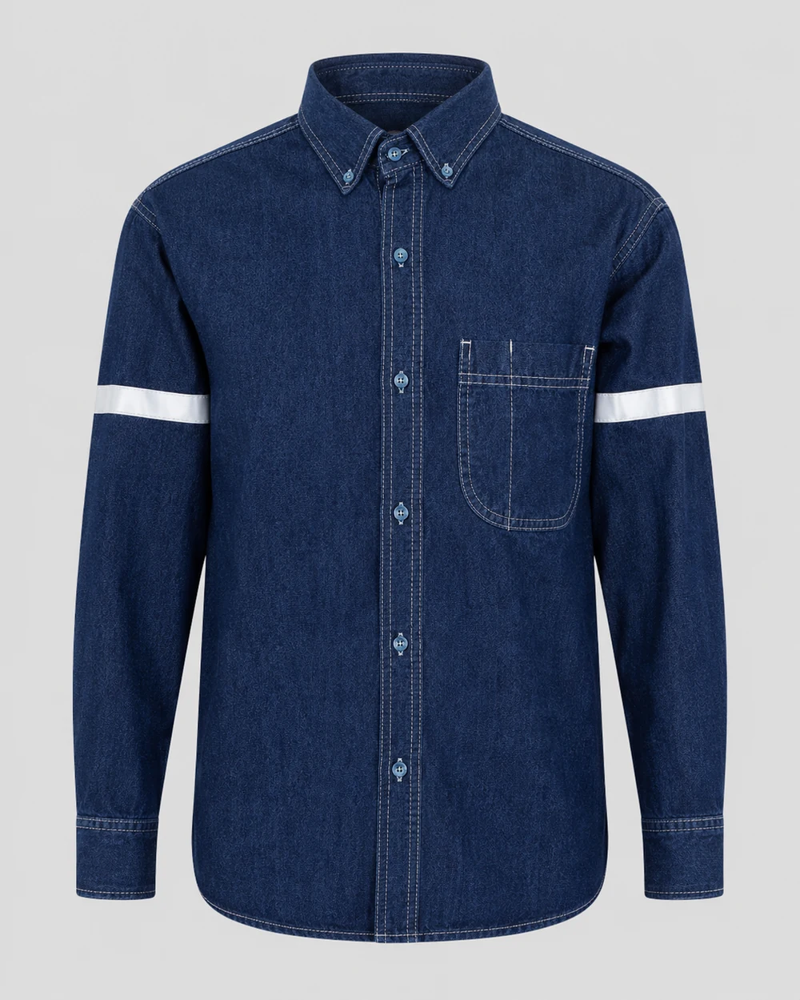
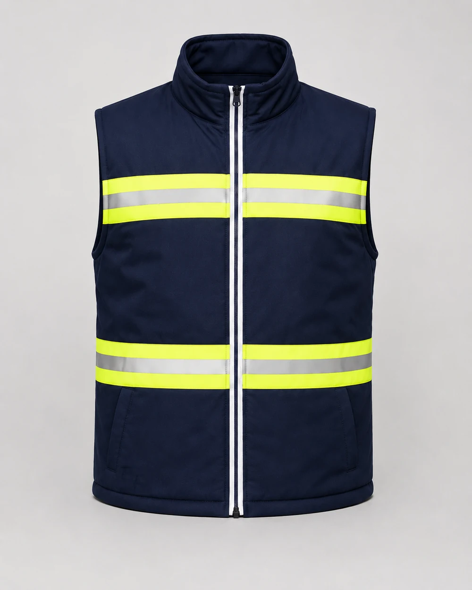

Líneas de producto
Explora por tipo de dotación
Cada línea tiene su página con telas, tallas y acabados. Las marcadas como próximamente todavía no están a la venta.

Overoles y mamelucos
Próximamente. Enterizo con cierre y peto con tirantes.
Ver línea
Chompas de trabajo
Próximamente. Casaca en jean o gabardina, con reflectivo.
Ver línea
Kits por trabajador
Kit básico disponible: pantalón, camisa y bordado desde $27.
Ver kits
Alta visibilidad
Chalecos, camisas y prendas con cinta reflectiva.
Ver línea
Ropa de trabajo para mujer
Próximamente. Patronaje femenino en pantalón, camisa y chompa.
Ver línea
Antifluido y limpieza
Chaleco disponible; mandil, filipina y pantalón en preparación.
Ver línea